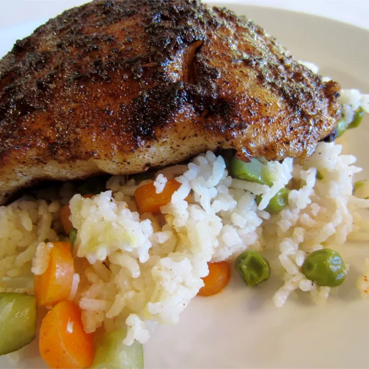

Blackened Catfish and Spicy Rice

A quick and easy blackened catfish and rice recipe. I like to serve this over a Cajun flavored spicy white rice. Although the rice is optional, the slightly spicy Cajun flavor of the rice brings out the taste of the catfish.
Ingredients
- 1 cup white rice
- 2 cups water
- 1 teaspoon Cajun seasoning
- ½ teaspoon hot pepper sauce
- 1 teaspoon ground thyme
- 1 teaspoon ground black pepper
- 1 teaspoon ground cayenne pepper
- 1 teaspoon salt
- ½ teaspoon garlic powder
- ½ teaspoon onion powder
- ½ teaspoon paprika
- ½ teaspoon dried dill weed
- ¼ teaspoon lemon pepper
- 2 (8 ounce) fillets catfish
- ½ cup butter, melted
- 1 teaspoon lemon juice, or to taste
Steps
- Bring rice, water, Cajun seasoning, and hot pepper sauce to a boil in a saucepan. Reduce heat to medium-low, cover, and simmer until rice is tender, and liquid has been absorbed, 20 to 25 minutes.
- While rice is cooking, mix thyme, black pepper, cayenne pepper, salt, garlic powder, onion powder, paprika, dill weed, and lemon pepper in a bowl until well blended. Brush catfish fillets with butter and sprinkle with seasoning mixture other both sides.
- Heat any remaining melted butter in a large skillet over medium-high heat; pan-fry seasoned catfish in butter until fish is easily flaked with a fork, 4 to 5 minutes per side.
- Serve catfish over a plate of seasoned rice. Pour leftover butter from the skillet over fish and sprinkle with lemon juice.
Home Page